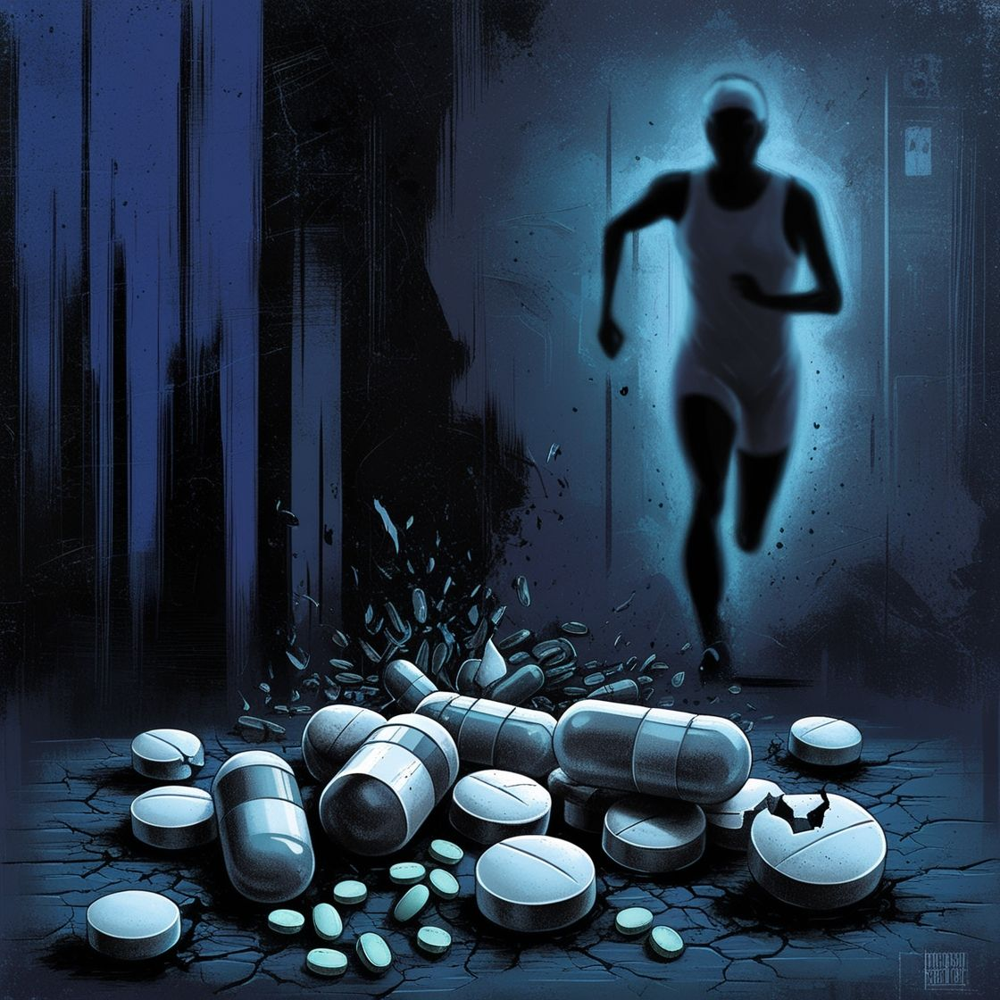

Página Principal: Concientización sobre el Uso de Drogas en el Deporte
Introducción
Bienvenidos a nuestro sitio web dedicado a la concientización sobre el uso de drogas en el deporte. Aquí exploraremos los diferentes tipos de sustancias que algunos atletas utilizan para mejorar su rendimiento, así como los riesgos y consecuencias asociados con su uso. Nuestro objetivo es educar y fomentar un debate saludable sobre este tema crítico.

Contenido del Sitio
En este sitio, encontrarás:
1. Información sobre Drogas en el Deporte
Drogas para Mejorar el Rendimiento: Conoce sobre esteroides anabólicos, estimulantes y hormonas que algunos atletas utilizan.
Drogas para la Recuperación: Información sobre analgésicos y antiinflamatorios que ayudan a los deportistas a recuperarse más rápidamente.
Drogas para la Concentración: Detalles sobre sustancias como Adderall que pueden mejorar el enfoque.
Drogas Recreativas: Un vistazo a cómo algunas sustancias, como la marihuana, son utilizadas por algunos atletas.
Drogas para la Pérdida de Peso: Información sobre diuréticos y su uso en deportes donde el peso es un factor crítico.
2. Gráficas Informativas
Visualiza datos relevantes sobre el uso de drogas en el deporte a través de gráficas que ilustran tendencias, estadísticas y efectos en el rendimiento deportivo.
3. Videos Educativos
Accede a una selección de videos de YouTube que abordan el tema del dopaje y el uso de drogas en el deporte. Estos videos ofrecen perspectivas de expertos y testimonios de atletas.
4. Recursos Adicionales
Encuentra enlaces a páginas web y documentos que profundizan en el tema del dopaje y el uso de sustancias en el deporte. Estos recursos te ayudarán a obtener una comprensión más completa del problema.
DOPAJE EN EL DEPORTE
NUESTRA OPINION:
-Para nosotros el uso de drogas en el deporte es perjudicial para el deporte y no esta bueno,tiene muchas consecuencias negativas y a largo plazo no son buenas,nuestra idea es hacer una página web que pueda ayudar a concientizar a los demás y no cometan esos actos que puedan ser perjudiciales para ellos.Nos parece que estas practicas fomentan el tener un buen rendimiento solamente por un quimico y no por un verdadero incremento de salud y bienestar,por lo cual nos parece mejor que no se utilicen y poder tener un buen fisico de manera natural.